Page 1: Newt's Case
Billywig
Billywigs are an insect native to Australia. Their stings cause giddiness and levitation and too many stings can cause this levitation to last for days on end. Their stingers are coveted for use in several Potions.
Return to: Darwin, Australia
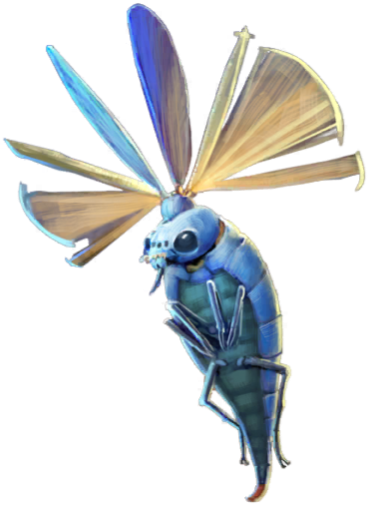
Young Graphorn
Graphorns are large, aggressive hump-backed creatures native to the mountains of Europe, whose horns are a highly sought-after Potions ingredient. In 1926 Newt Scamander was known to have the last breeding pair of Graphorns, working toward a re-population strategy.
Return to: Newt Scamander's Suitcase
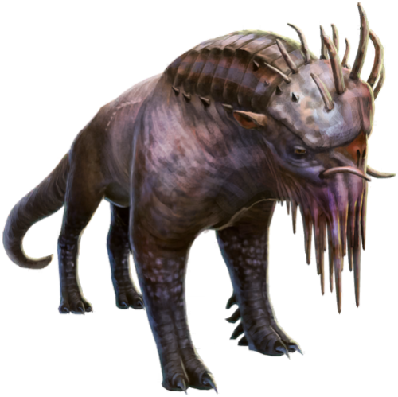
Mooncalf
Mooncalves are extremely shy creatures that only leave their burrows during a full moon. It is believed that their dung when harvested before sunrise, will make magical plants grow stronger.
Return to: Cork, Ireland
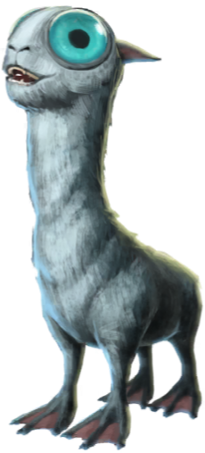
Baby Niffler
Nifflers can have large litters of up to 8 babies, which can come in a variety of different colours; ranging from the typical black to brown & white, grey & white, and tricolour. They are born with an instinctive love for anything shiny or glittery.
Return to: Newt Scamander's Suitcase
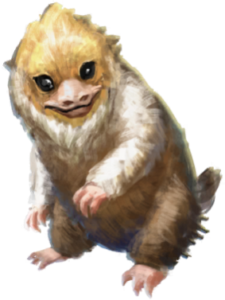
Niffler
Nifflers are adorable creatures with a love for shiny objects, but can be quite mischievous if left unattended. Their ability to find valuable metals is often used by wizards as a means of tracking down treasure.
Return to: Edith Abernathy
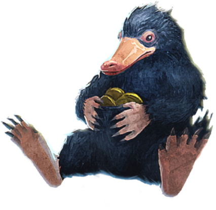
Page 2: Central Park
Murtlap
Murtlaps are sea creatures whose flesh has magical properties. Tentacles can be eaten to improve resistance to jinxes, while pickled and strained Murtlap is used in a common home remedy to treat cuts and abrasions.
Return to: Newt Scamander's Suitcase
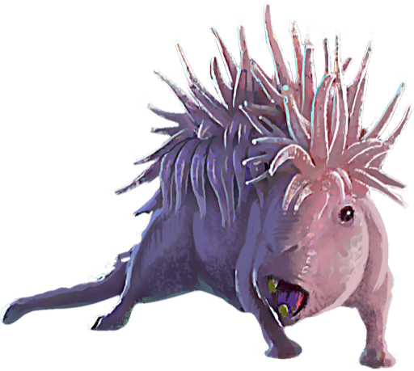
Pickett
Pickett is Newt Scamander's beloved Bowtruckle companion. Strong minded and determined, Pickett can frequently be found in the top pocket of Scamander's coat due to his attachment issues.
Return to: Newt Scamander's Pocket
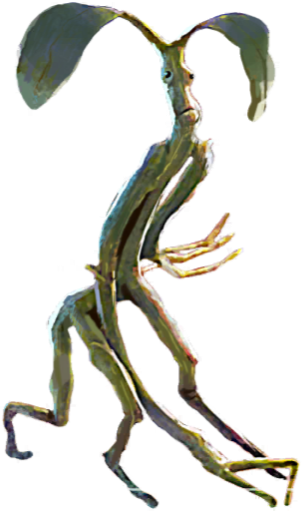
Mountain Troll
The Mountain Troll cuts an imposing figure, growing up to 12 feet tall and weighing over a tonne. Despite their lack of intelligence, Mountain Trolls possess crude language skills and some have even been trained as guardians.
Return to: Liechtenstein
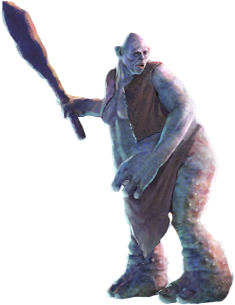
Demiguise
Peaceful, primate-like creatures who are found in the Far East, Demiguises can make themselves invisible, and their hair can be used to weave Invisibility Cloaks. Demiguises have precognitive sight so that the only way to catch them is to do something completely unpredictable.
Return to: Newt Scamander's Suitcase
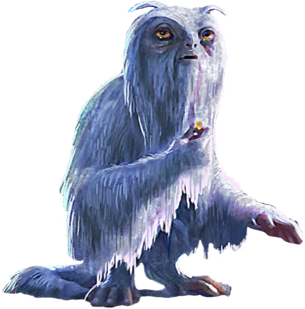
Erumpent
Erumpents are large, dangerous creatures with an extremely thick hide that can repel most spells, and a horn that contains a liquid that can explode. Erumpent horns, tail and exploding fluid are highly sought after.
Return to: Kilimanjaro Region, Tanzania
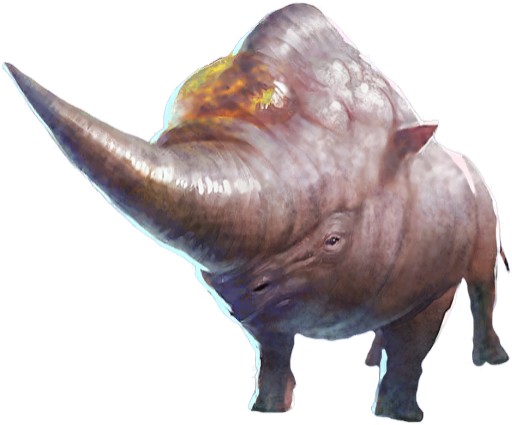
Branch of Bowtruckles
Bowtruckles are tiny tree-dwelling creatures that have the appearance of a twig, which allows them to camouflage with their surroundings. Considered to be tree guardians, they favour trees that can be used to create wands.
Return to: The Black Forest, Germany
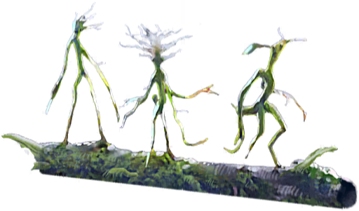
Page 3: New York City Street
Newt Scamander
Newt Scamander grew to become a famed Magizoologist, known for his book Fantastic Beasts and Where to Find Them. His talent for handling and connecting with magical creatures is legendary, with many species treating him differently that other humans.
Return to: Newt Scamander's Suitcase
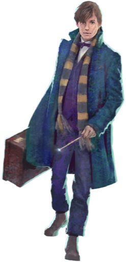
Occamy
Occamy are winged serpents that are choranaptyxic - able to grow or shrink to fit into any available size. Occamy are native to Asia and are protective of their eggs, which are made of silver and therefore immensely valuable.
Return to: Newt Scamander's Suitcase
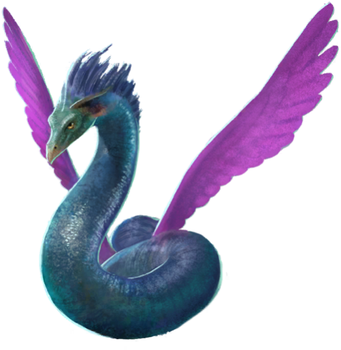
Occamy Eggs
Occamy Eggs are made of pure silver, and are protected vigilantly by adult Occamy. Aside from their pure value as an ore, the eggs are an essential ingredient for the Potion Felix Felicis, making the eggs incredibly valuable.
Return to: Newt Scamander's Suitcase
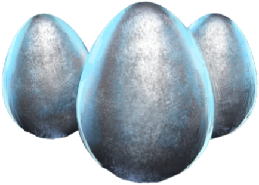
Thunderbird
Thunderbirds are massive birds that are highly sensitive to danger and have the power to create storms as they fly. They are native to the deserts of America and their feathers have been used in wandmaking.
Return to: Arizona
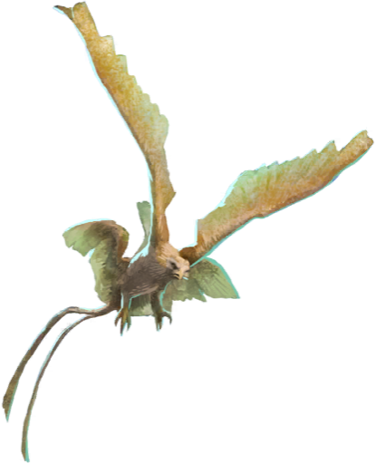
Unicorn
The Unicorn is a magical white horse featuring a single horn upon its head. They possess magical properties: Unicorn Hair used in wands cores tend to produce the most consistent magic while Unicorn Blood is said to lengthen one's lifespan.
Return to: Estonia
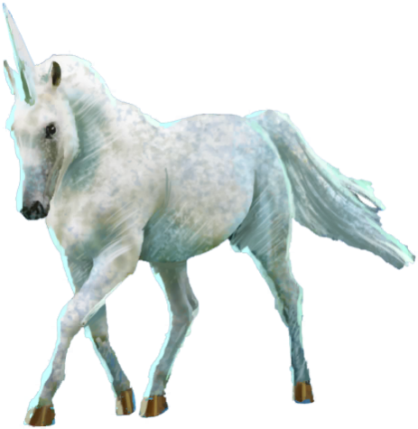